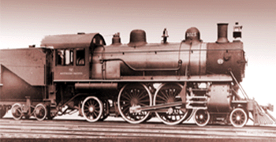

Last updated: 9 September, 2025
| Builder: | ALCO, Schenectady |
| Build #: | 30005 |
| Date: | 1904 |
| Engine #: | 3025 |
| Railroad: | Southern Pacific |
| Website: | www.laparks.org/traveltown traveltown.org |
| Email: | Travel.Town@lacity.org |
| Location: | Griffith Park, Travel Town, 5200 Zoo Dr, Los Angeles, CA 90027 |
| GPS: | 34.153791, -118.309056 Parking. |
| Phone: | 323-662-5874 |
| Status: | Display |
| Notes: | Donated in 1952 by Southern Pacific Railroad Co |
Subject to change: | |
| Hours: | Monday thru Friday 1000 to 1700 (10AM to 5PM) Weekends & Holidays 1000 to 1700 (10AM to 5PM) Closed Thanksgiving and Christmas 2 (The Museum Gift Shop closes at 4:45PM) |
| Admission: | Donations only. There is no parking/admission fee to visit Travel Town! 2 |
This locomotive was saved from scrap by the Southern Pacific in 1952 to become Travel Town's first engine on display. No. 3025 was built in 1904 by the American Locomotives Company's works in Schenectady, New York, and was purposefully constructed with extraordinarily tall driving wheels for high-speed passenger service, at 81" nearly the tallest ever built. No. 3025 may have occasionally pulled name trains along the California coast, the Daylight or its sister train the Starlight, and most definitely the Lark.
The "Coast Route," Southern Pacific's standard gauge road from San Francisco to Los Angeles, hugging California's rugged coastline, swinging above the surf along the edges of steep cliffs; certainly it was one of the most scenically spectacular routes by which to travel in California. Throughout the 20th Century, the Coast Route was traveled by kings, presidents, millionaires and movie stars, and including such dignitaries as Presidents Theodore Roosevelt and Woodrow Wilson, and Queen Marie of Romania. No. 3025 was most certainly a "crack" (fast) passenger-train engine, and with its massive driving wheels, was able to attain speeds up to 100 miles per hour.
| Class: | A-3 |
| Gauge: | 4'-8½" |
| F.M.Whyte: | 4-4-2 (Atlantic) |
| Drivers: | 81" |
| Gear Ratio: | |
| Tractive Effort: | |
| Weight: | 115 tons |
| Weight on Drivers: | |
| Length: | 70' 5" |
| Boiler: | |
| Cylinders: | 20"x28" |
| Top Speed: | 100 |
| Horsepower: | |
| Fuel: | |
| Fuel Type: | |
| Water: | |
| Steam psi: |